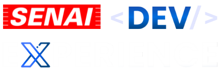
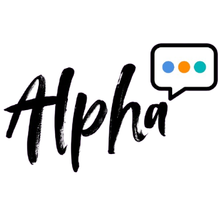

João Pedro Machado
Atuação em
Estudante de Análise e Desenvolvimento de Sistemas pelo SENAI, com formação técnica em Desenvolvimento de Sistemas. Desenvolvo aplicações web e mobile com foco em boas práticas, organização de código e construção de soluções eficientes.
Minha Jornada
Um pouco da minha história, meus interesses e o que venho construindo ultimamente.
Sobre mim
Minha trajetória na tecnologia começou durante o curso técnico em Desenvolvimento de Sistemas no SENAI, concluído em 2025. Foi nesse período que consolidei minha base em programação e participei de diversos projetos práticos envolvendo desenvolvimento web, mobile, integração com APIs e uso de bancos de dados. Durante essa fase, fui finalista por duas edições do Dev Experience, hackathon de programação promovido pelo SENAI, experiência que ampliou minha visão sobre trabalho em equipe, estruturação de soluções e desenvolvimento orientado a resultados. Atualmente curso Análise e Desenvolvimento de Sistemas pelo SENAI, aprofundando meus conhecimentos em engenharia de software, desenvolvimento web e modelagem de banco de dados, com foco na construção de aplicações funcionais e escaláveis. Além da formação acadêmica, busco constante evolução por meio de cursos da Cisco, Amazon AWS, Alura e Hashtag Treinamentos. Tenho interesse especial em desenvolvimento de software e na construção de sistemas bem estruturados, que aliem eficiência, clareza e escalabilidade.
Minhas Habilidades
Tecnologias e ferramentas que explorei durante minha formação e que sigo buscando evolução contínua.
HTML
CSS
JavaScript
Python
React Native
PHP
MySQL
Git
Github
Certificações
Algumas das conquitas e certificados que obtive ao longo da minha trajetória acadêmica.
Introdução à Análise de Dados - Microsoft Power BI
Jornada Python da Hashtag
Mitigando Vulnerabilidades em PHP e JavaScript
Começando com o Cisco Packet Tracer
Projetos Realizados
Trabalhos que desenvolvi durante a formação, sempre aplicando qualidade, fundamentos e boas práticas.

SENAI Dev Experience
Site oficial do SENAI Dev Experience, competição de programação criada pelo SENAI Taubaté em 2024. Oferece todas as informações do evento e permite a inscrição dos alunos, além de um sistema administrativo completo para os professores.
SMI (Sistema de Monitoramento Industrial) - Web
Site de monitoramento industrial em conjunto com um chat-bot, visando melhorar a eficiência energética e a manutenção inteligente das máquinas industriais.
SMI (Sistema de Monitoramento Industrial) - App
Aplicativo de monitoramento industrial em conjunto com um chat-bot, visando melhorar a eficiência energética e a manutenção inteligente das máquinas industriais.

Alpha
Aplicativo inspirado em redes sociais como o Instagram, com uma dinâmica voltada para postagens visuais e conversas diretas.
ConectaHub
Plataforma web de uma rede social. Permite o cadastro e login de usuários, a publicação de novas postagens e possui um chat interativo entre os usuários.
História em Foco
Plataforma destinada a ajudar estudantes a aprimorar seus conhecimentos em História, oferecendo conteúdos e recursos educativos para facilitar a preparação para vestibulares.
Matemática Financeira
Ferramenta prática para simplificar o controle financeiro, ajudando na organização das despesas e promovendo o bem-estar financeiro do usuário.
TDA (Tecnologia, Desenvolvimento e Análise)
Primeiro projeto semestral desenvolvido durante o curso técnico. Site simples que conta sobre a empresa fictícia "TDA" e promove a venda de um produto.
Recriação de telas do Spotify
Um dos primeiros projetos do curso técnico em Desenvolvimento de Sistemas no SENAI. Replicação leal do front-end da página inicial e de login do Spotify.
Contato
Entre em contato comigo através das minhas redes ou por e-mail.
Informações de Contato
jotapepe.machado@gmail.com
+55 (12) 98898-2050
São José dos Campos, São Paulo, Brasil